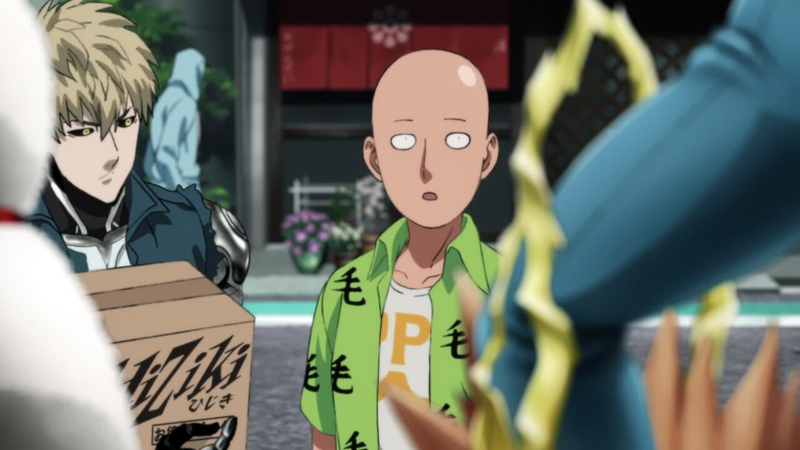
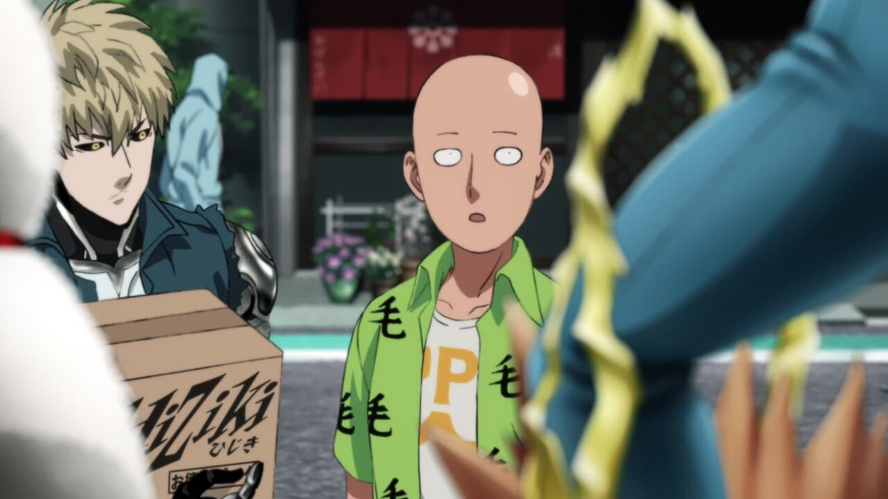

Season 2: Episode 1 - Return of the Hero
Hello everyone, and welcome to season 2! This season was among one of the most controversial parts of the OPM franchise, but the Blu-Ray release brings some great changes! Throughout this guide, I'll be looking at every single change from the TV version to the Blue Ray, down to the pixel.
Let's take a look!
- Our first change of the season is was a massive talking point in the OPM community: Genos's Shading!
- Saitama also gets some love with a redraw + reshade:


- Saitama also gets redrawn here:
 
- Saitama gets another touchup:


- The positioning on a lot of the elements of this shot are different:


- Plceholder


- Plceholder
- Plceholder
- Plceholder
- Plceholder
- Plceholder
- Plceholder
- Plceholder
That's Episode 1! Though many of the changes were shading or composition related, there were some awesome cuts of un-ghosted animation in there. I haven't had the chance to look frame by frame at Episode 2 yet (I will, don't worry,) but watching it as a whole was awesome, and I anticipate even more great changes when I take a closer look.
I hope you enjoyed the comparison!